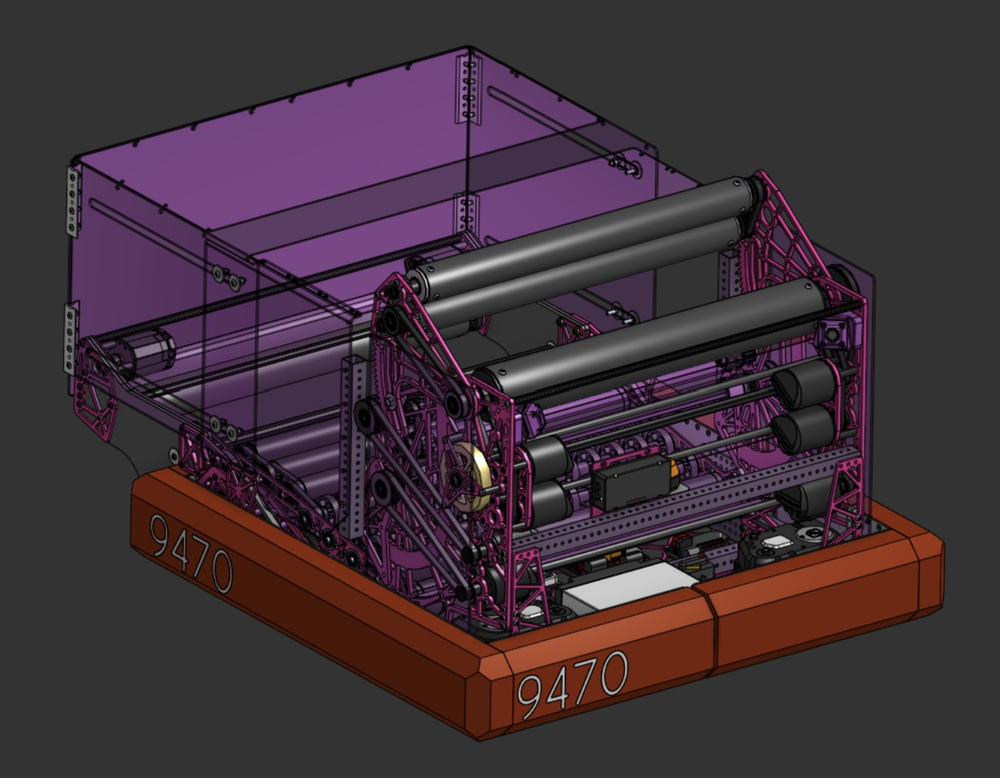

PRJ / 001
Parametric Mechanical Assembly
CAD / DESIGN
IMAGE 01CAD overviewReplace project-01-a.jpg

IMAGE 02Detail / prototypeReplace project-01-b.jpg
OVERVIEW
Describe the engineering challenge, your design approach, and the final result. Highlight the features you developed, constraints you worked within, and what you learned from the process.